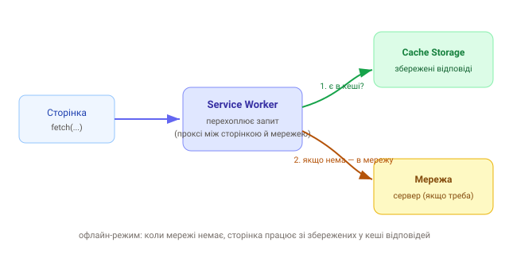

1. Що таке Service Worker
Service Worker (SW) — особливий воркер, що працює як проксі між сторінкою й мережею. Він може перехоплювати всі мережеві запити й вирішувати: віддати з кешу, сходити в мережу чи скомбінувати. Це основа офлайн-режиму й PWA.

SW живе окремо від сторінки й переживає її закриття. Працює лише через
HTTPS (і localhost для розробки) — бо перехоплення трафіку потребує
безпечного контексту.
2. Реєстрація
// main.js — на сторінці
if ('serviceWorker' in navigator) {
navigator.serviceWorker.register('/sw.js');
}3. Життєвий цикл: install → activate → fetch
SW має три ключові події. На install — кладемо файли в кеш; на
activate — чистимо старі кеші; на fetch — вирішуємо, звідки віддати
відповідь.
// sw.js
const CACHE = 'app-v1';
const ASSETS = ['/', '/index.html', '/styles.css', '/main.js'];
self.addEventListener('install', (e) => {
e.waitUntil(caches.open(CACHE).then((c) => c.addAll(ASSETS)));
});
self.addEventListener('activate', (e) => {
// видалити кеші старих версій
e.waitUntil(
caches.keys().then((keys) =>
Promise.all(keys.filter((k) => k !== CACHE).map((k) => caches.delete(k)))
)
);
});4. Перехоплення запитів
Найпростіша стратегія — cache-first: якщо є в кеші, віддай його; інакше сходи в мережу.
self.addEventListener('fetch', (e) => {
e.respondWith(
caches.match(e.request).then((cached) => cached ?? fetch(e.request))
);
});5. Стратегії кешування
- cache-first — спершу кеш (для статики: CSS, JS, шрифти, іконки);
- network-first — спершу мережа, кеш як запасний (для свіжих даних/API);
- stale-while-revalidate — віддати кеш одразу, а у фоні оновити його з мережі (баланс швидкості й свіжості).
Найпоширеніша пастка — «застряглий» SW: користувач бачить стару версію після
деплою. Тому версіонуй кеш (app-v1 → app-v2) і чисти старі на
activate. У продакшені зазвичай генерують SW інструментом Workbox.
6. Workbox і генерація
Писати SW руками помилконебезпечно (версії, стратегії, precache-маніфест). Тому
беруть Workbox або плагіни збирача (vite-plugin-pwa) — вони генерують SW,
підставляють список файлів і застосовують перевірені стратегії. Про це — в уроці про
PWA.